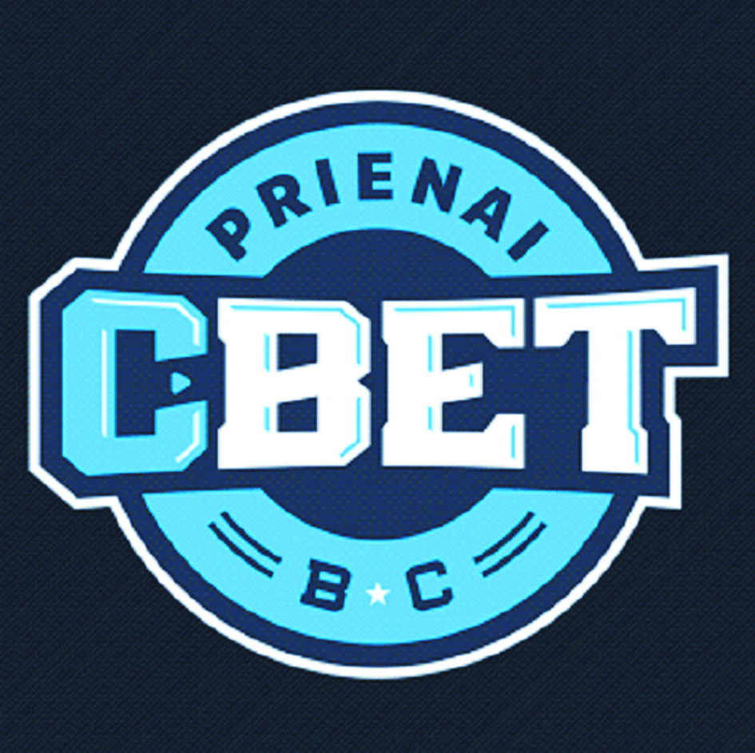

CBet
Logotipas:

Įkurtas: 1999 m
Treneris: Virginijus Šeškus
Komanda:
- Matas Masiliūnas
- Kahlil Thomas
- Justinas Ramanauskas
- Juan Palacios
- Evaldas Šaulys
- Laimonas Kisielius
- Nedas Rauluševičius
- Edvinas Šeškus
- Vitalijus Kozys
- Astijus Ivanovas
- Tomas Zdanavičius
- Mantas Gezevičius
- Manu Lecomte
- Lachlan Anderson
Oficiali svetainė
<Grįžti į pagrindinį puslapį